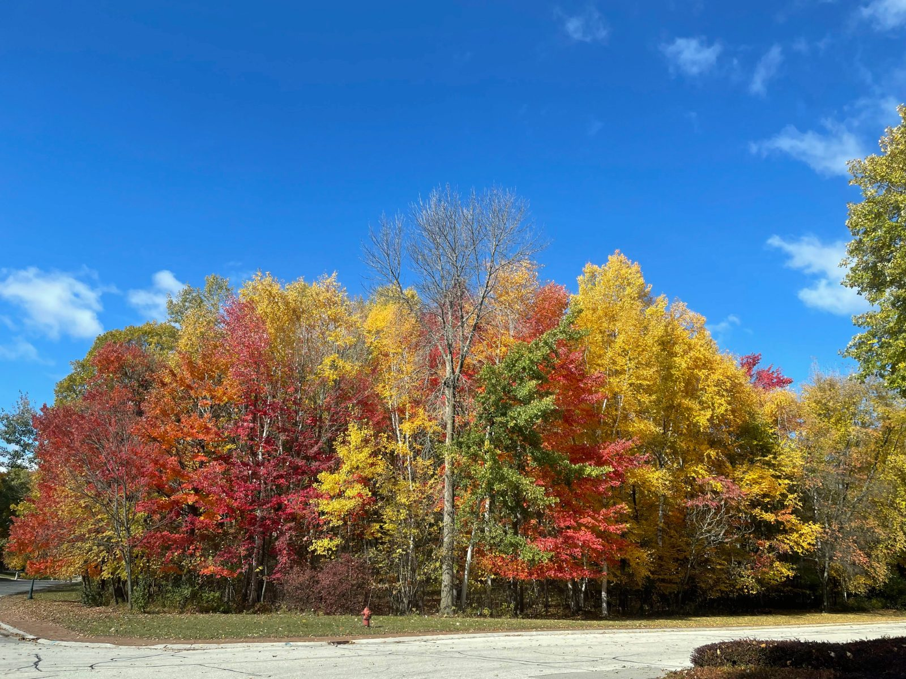
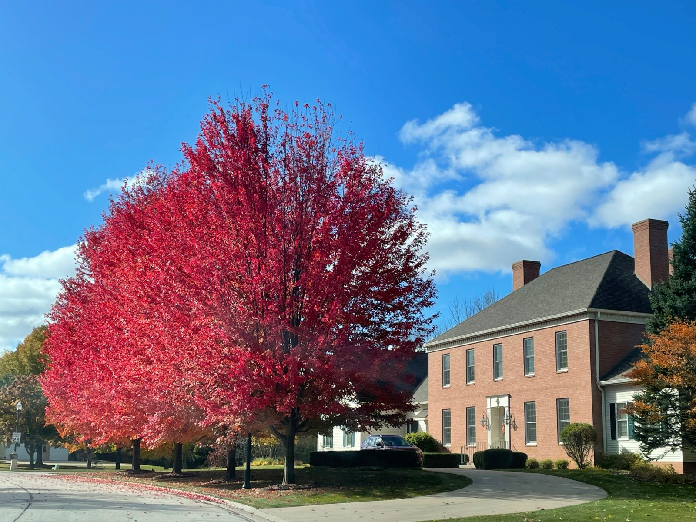

Aerials, seasonal scenes, and snapshots from gatherings around Thornberry Creek.




Have a great shot of the neighborhood? We'd love to feature it. Send your seasonal photos and event snapshots to info@thornberrycreekcommunity.com.
Photos only go so far. Join us at an event or reach out to learn more about life in the neighborhood.